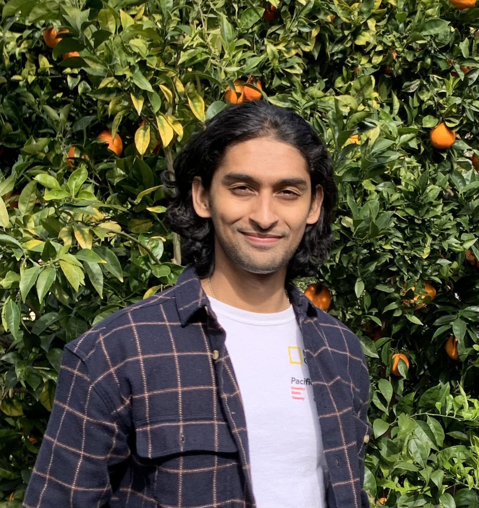

Manuel Ack.
Hey! I’m Manuel, founder of A.C.K. Academy, where I combine my interest in learning science with a background in Applied Mathematics from Columbia University. Over the past five years, I’ve taught computer science to elementary students at Khan Lab School in Palo Alto, mentored middle and high schoolers across the U.S. on Computer Science and AI projects, and provided private tutoring in economics, physics, computer science, and mathematics.
At A.C.K. Academy, we're applying principles from learning science to improve early childhood education. Our approach respects how the brain actually learns, embraces self-directed learning, and prioritizes student-centered methods over rigid, one-size-fits-all models. We need environments that nurture students’ natural learn drive, help them reconnect with their curiosity, and cultivate the deep understanding that comes from engaging with something truly interesting and personally meaningful.
🚴 I also work as a youth instructor for Bike NYC, where I teach kids the joy and independence of riding.
Chang Seuk
Hi! I'm Chang Seuk, co-founder of A.C.K. Academy and a student of Pure Mathematics currently pursuing my studies at Columbia University. Alongside my academic pursuits, I've had the privilege of serving as a teaching assistant in various mathematics courses, including Differential Geometry, Calculus I, and Introduction to Higher Mathematics. This role has allowed me to share my enthusiasm for mathematics and assist fellow students in grasping fundamental concepts.
My time at Columbia University has also led me to explore advanced topics in mathematics, with a focus on differential topology and the representation of finite groups. These pursuits have opened up new horizons and deepened my understanding, fueling my passion to further explore the realm of Pure Mathematics. In my free time, I enjoy watching my favorite football team, Real Madrid, let's go Professor Kroos! ⚽️